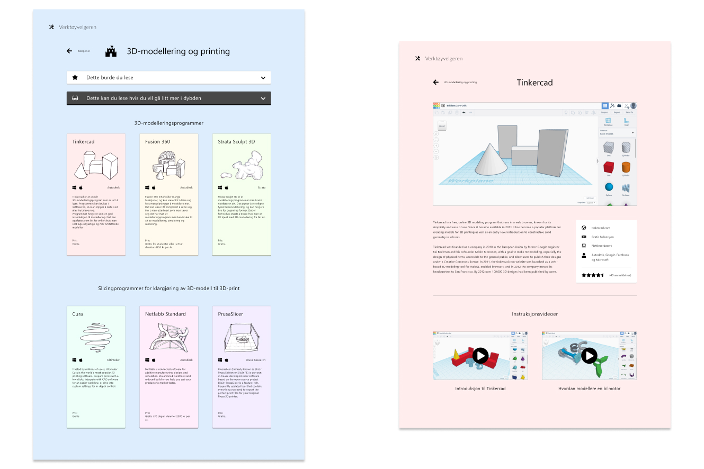
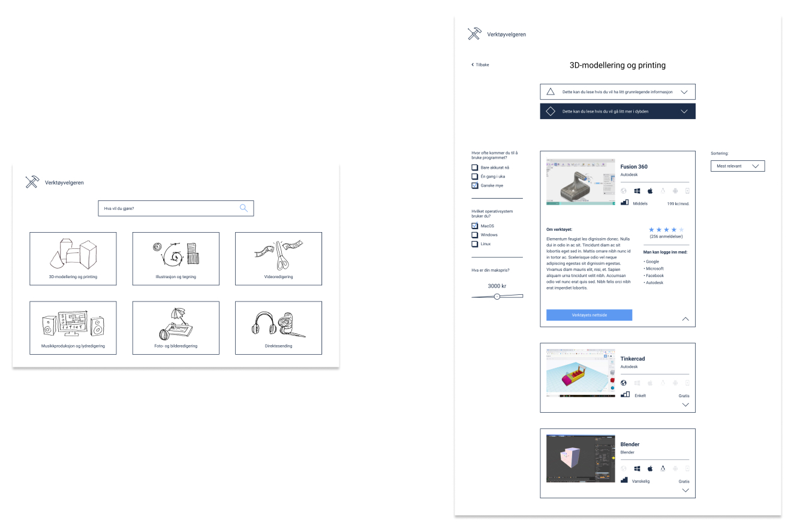
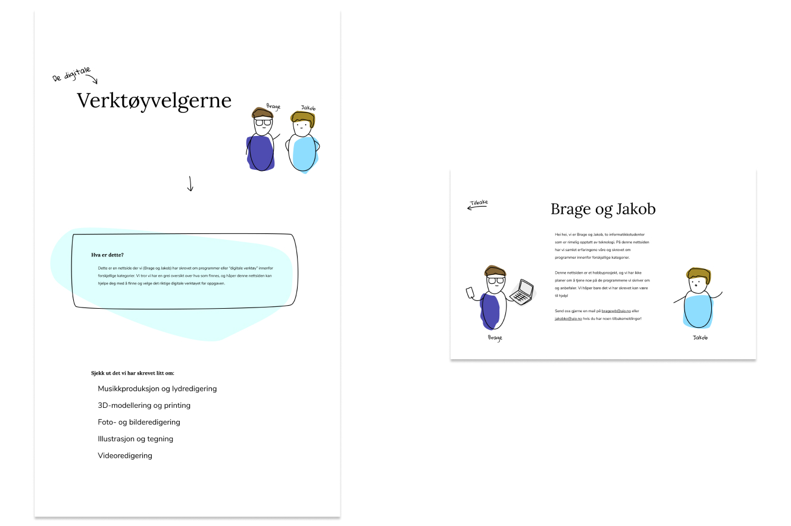
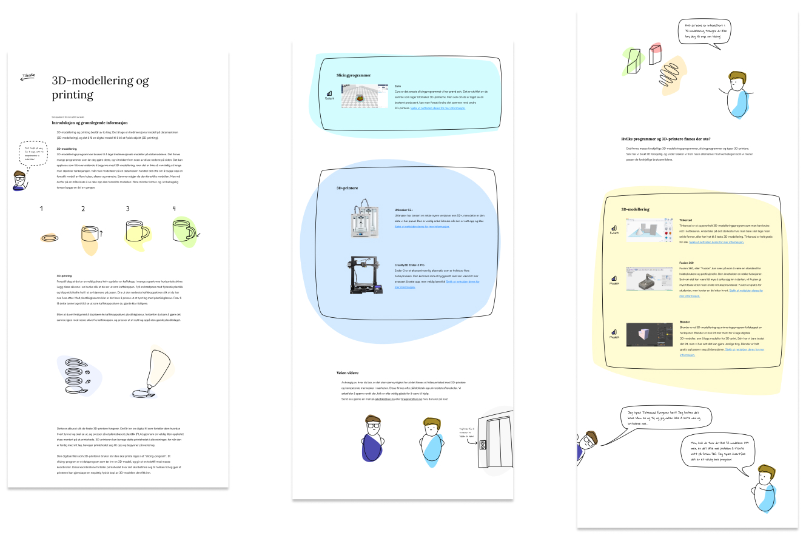
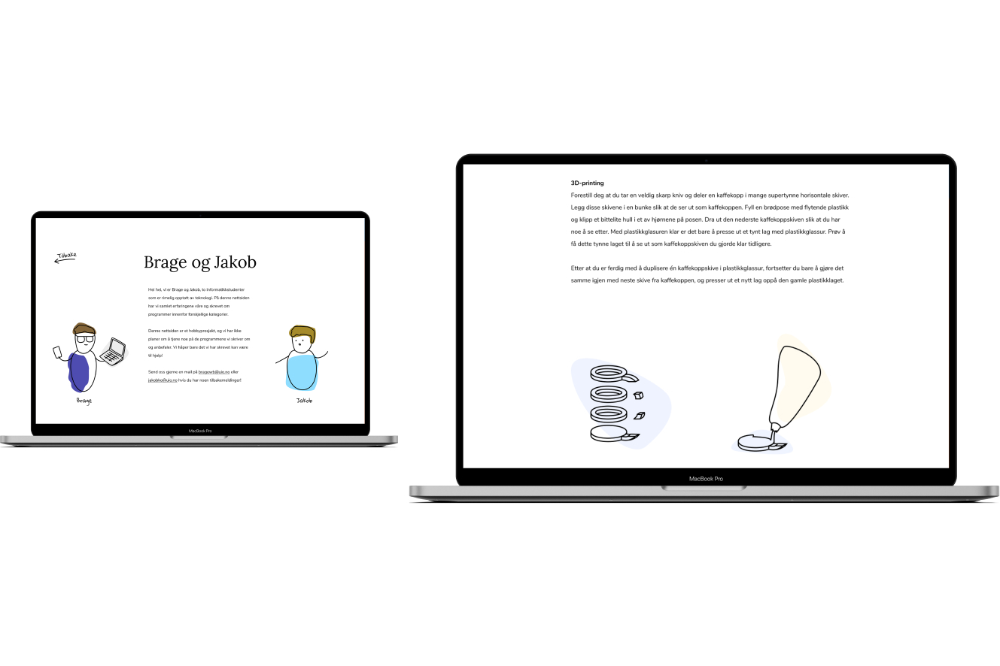

– Master's thesis
A presentation of the final website prototype design.
University of Oslo · 2020 · Interaction Design
We developed a design proposal over three iterations that aimed at simplifying the process of finding and choosing a digital tool for a task at hand. We looked at existing litterature regarding interaction design, choice theory and how to achieve simplicity in design. The thesis applied User Centered Design (UCD) and involved ten participants in different data collection methods.
Prior to working on the thesis we’d seen that some people found it challenging to choose a suitable program they could use to solve a task, as there’s often a lot of programs to choose from. We saw how the usability of the different programs could influence how a task was solved by the user. We chose to call these programs for “digital tools” in order to clarify that the user is in control.
I interviewed the participants, performed participatory observations, and tested the different design proposals with the users. I also worked on designing the different iterations and read up on existing literature.
We started working on the master's thesis by conducting interviews and participatory observations with the participants at their workplaces. We presented them for fictional contexts and asked them to find and choose a suitable digital tool. This gave us insight in how different contexts could change the participants approach and choice process. The development of the design proposals was an iterative process where we tested and changed them according to user feedback.
User Centered Design, Figma, Adobe XD, user testing, interviews, participatory observations and contextual tasks.
The frontpage of the first design proposal, showing multiple task categories
Overview of the different digital tools and a page for the digital tool Tinkercad in the first design proposal.
The second design proposal, here showing the multiple task categories and an overview of the digital tools. Information about a digital tool is hidden inside a dropdown, so the user can browse the different options while reading more about one specific digital tool.
The third and final design proposal. We saw from the user tests that people like to ask friends when they are wondering what kind of digital tool they should use for a task. This design proposal is made to make the user feel like two friends are talking to them.
Cutouts of the page showing information about 3D-modelling and printing in the third design proposal. We thought that in order for the user to choose the right digital tool for 3D-modelling, they first have to learn a little bit about what the process entails. We described the different steps with illustrations, and provided a short list of three different digital tools.
A presentation of the final design proposal.
jakobk@jakobk.no